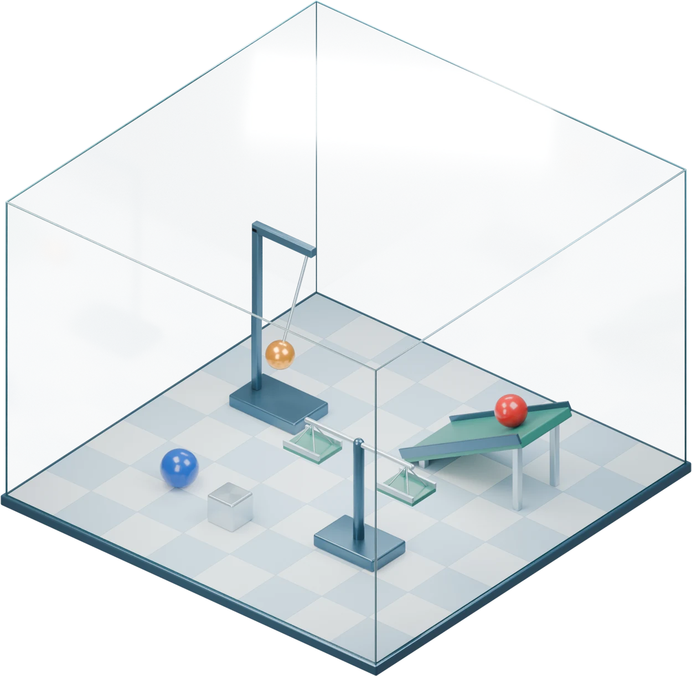
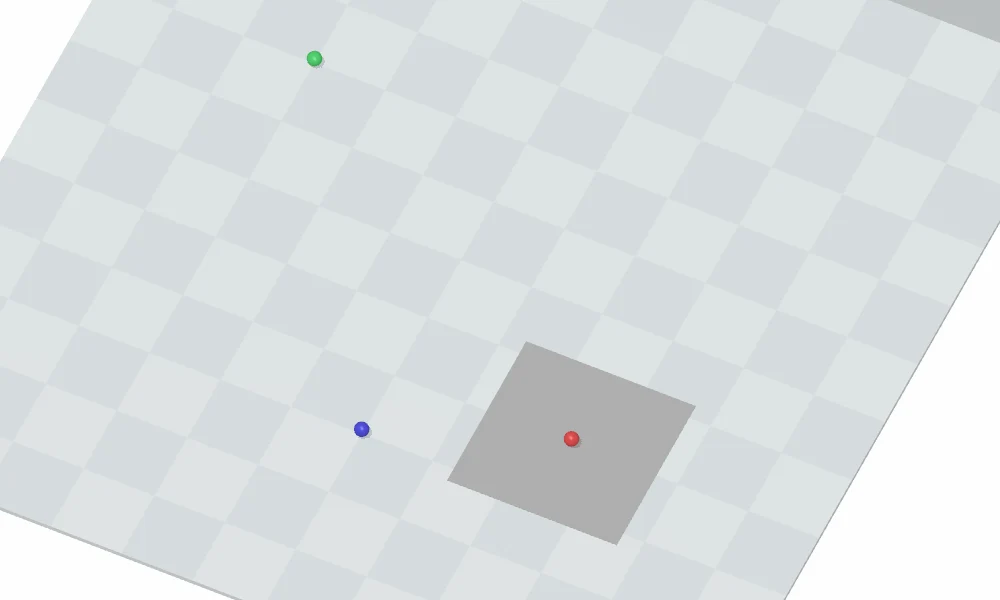

Tile rebounds
Release two identical balls from the same height.

Explore the Worlds
This video could not load. The interactive illustration is available in Try the law.

INITIAL STATE · RECORDED WORLDNormal control
Full rule
Native scene physics.
Rule illustration
Framework
Build the world.
Define altered physics, then test and review the scene.
- IN
- Scene design
- OUT
- Validated world + hidden law
Construct
Explore
Evaluate
Main Results
Discovery in Practice
Controlled comparisons
GPT-6-Astra · Controlled experiments
Case studies
Red restarts. Who investigates?
The same unexpected motion, two different responses.
Red moves without a new push.Astra was holding blue still when red restarted.
The log also reports a restart.Red is against the wall, so its motion is barely visible.
Changes the plan to test the anomaly.Pushes red, then waits. Red restarts about 10 s after the push.
Keeps the planned gravity test.Throws red upward, without testing why it restarted.
Checks whether blue resets the delay.Pushes blue too: red again restarts about 10 s later.
Leaves the restart unexplained.Runs a collision test, then ends the exploration.
Astra’s findingA nonzero push or throw on either ball pauses red’s northward force for 10 s.
Scene 15 · 100-turn main study
Color exchange or independent flips?
Red meets red: both stay red. The balls exchange colors at contact.
Scene 12 · 500-turn run
How do you weigh a drifting ball?
Retaining walls keep the ball in the pan, enabling a stable reading.
Scene 15 · 500-turn run
Full results & setup
All comparisons use GPT-6-Astra. Guidance adds a discovery task, an altered-physics notice and a scene-specific clue. Guidance and tool access use the 100-turn main baseline; the explorer chooses whether to build. Budget runs use a separate matched baseline without context compaction. The anomaly case compares two independent 100-turn runs with the same setup and no research task; the color and tool cases use selected 500-turn runs.
Scene Evolution
Demo could not load.
Change the force
Red and blue repel. A push pauses repulsion for 10 s.
Rule illustration
Force timing; positions are schematic.
Trace → designThe trace mistook a paused force for no force. This world tests the same error with repulsion.
Trace reference & full rule
The shared source trace
Scene 15 · GPT-6-Astra · Run 2Source rule: any nonzero push or throw pauses red’s northward force for 10 seconds.
“Red traveled the usual 1.5 bricks south and remained at rest (turns 28–29), so the earlier northward acceleration is not a persistent local effect.”
“Red restarted north after 3.884 counts of turn 30, about 10 counts after the southward push, while blue stayed still. This corrects my earlier inference: the effect is delayed, not absent.”
Interactive trials use prepared starting positions; time is in simulation seconds.
Read the frozen design ↗Evaluating the new scenes
GPT-6-Astra · 3 runs per scene · independent source-scene baseline